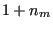
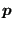
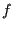
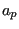
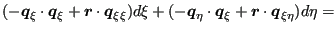
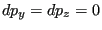

Next: Tangent contact stiffness Up: Node-to-Face Penalty Contact Previous: General considerations Contents
A node-to-face contact element consists of a slave node connected to a master face (cf. Figure 128). Therefore, it consists of  nodes, where is the number of nodes belonging to the master face. The stiffness matrix of a finite element is the derivative of the internal forces in each of the nodes w.r.t. the displacements of each of the nodes. Therefore, we need to determine the internal force in the nodes.
Denoting the position of the slave node by
 and the position
of the projection onto the master face by
 , the vector
connecting both satisfies:
, the vector
connecting both satisfies:
The clearance  at this position can be described by
at this position can be described by
| (205) |
where
 is the local normal on the master
face. Denoting the nodes belonging to the master face by
and the local coordinates within the face by
is the local normal on the master
face. Denoting the nodes belonging to the master face by
and the local coordinates within the face by  and
and  , one can write:
, one can write:
and
| (208) |
is the Jacobian vector on the surface. The internal
force on node  is now given by
is now given by
where  is the pressure versus clearance function selected by the
user and
 is the slave area for which node  is representative. If the slave
node belongs to
is representative. If the slave
node belongs to  contact slave faces
contact slave faces  with area , this area may be calculated as:
with area , this area may be calculated as:
| (210) |
The minus sign in Equation (209) stems from the fact that the
internal force is minus the external force (the external force is the force
the master face exerts on the slave node). Replacing the normal in Equation
(209) by the Jacobian vector devided by its norm and taking the
derivative w.r.t.
 , where
, where  can be the slave node or any node belonging
to the master face one obtains:
can be the slave node or any node belonging
to the master face one obtains:
| (211) |
Since
| (212) |
the above equation can be rewritten as
Consequently, the derivatives which are left to be determined are , and .
The derivative of is obtained by considering Equation (207), which can also be written as:
| (214) |
Derivation yields (notice that  and
and  are a function of
are a function of
 , and that
, and that
 ) :
) :
![$\displaystyle \sum_{j=1}^{n_m} \sum_{k=1}^{n_m} \left[ \frac{\partial \varphi_j...
...right] (\boldsymbol{I} \times \boldsymbol{q_k}) \delta_{ij}, \:\:\: i=1,..n_m;p$](img921.png) |
(215) |
The derivatives
and
 on the right hand side are
unknown and will be determined later on. They represent the change of
on the right hand side are
unknown and will be determined later on. They represent the change of  and
and  whenever any of the
whenever any of the
 is changed, k being the
slave node or any of the nodes belonging to the master face. Recall that the
value of
is changed, k being the
slave node or any of the nodes belonging to the master face. Recall that the
value of  and
and  is obtained by orthogonal projection of the slave
node on the master face.
is obtained by orthogonal projection of the slave
node on the master face.
Combining Equations (204) and (206) to obtain
 ,
the derivative w.r.t.
,
the derivative w.r.t.
 can be written as:
can be written as:
| (216) |
where  represents the slave node.
represents the slave node.
Finally, the derivative of the norm of a vector can be written as a function of the derivative of the vector itself:
| (217) |
The only derivatives left to determine are the derivatives of  and
and  w.r.t.
w.r.t.
 . Requiring that
. Requiring that
 is the orthogonal
projection of
onto the master face is equivalent to
expressing that the connecting vector
is the orthogonal
projection of
onto the master face is equivalent to
expressing that the connecting vector
 is orthogonal to the
vectors
and
, which are tangent to the master surface.
is orthogonal to the
vectors
and
, which are tangent to the master surface.
Now,
| (218) |
can be rewritten as
| (219) |
or
![$\displaystyle \left [\boldsymbol{p} - \sum_i \varphi_i (\xi ,\eta ) \boldsymbol...
...ft[ \sum_i \frac{\partial \varphi_i}{\partial \xi } \boldsymbol{q_i} \right]=0.$](img931.png) |
(220) |
Differentation of the above expression leads to
| (221) |
where
is the derivative of
 w.r.t.
w.r.t.  . The above equation is equivalent to:
. The above equation is equivalent to:
| (222) |
One finally arrives at:
|  | ||
| (223) |
and similarly for the tangent in  -direction:
-direction:
| (224) |
From this , and so on can be determined. Indeed, suppose that all and . Then, the right hand side of the above equations reduces to and and one ends up with two equations in the two unknowns and . Once is determined one automatically obtains since
| (225) |
and similarly for the other derivatives. This concludes the derivation of .
Since
| (226) |
one obtains:
for the derivatives of the forces in the master nodes.